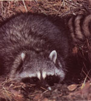
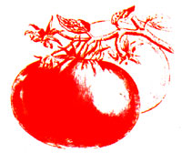

Researchers have known for years that adding organic matter can control some soilborne plant diseases. For example, Australian avocado growers have successfully limited phytophthora root rot by incorporating sizable amounts of organic materials in their orchards. Recently, though, two plant pathologists at the National Chung Hsing University in Taiwan have concocted a new soil amendment that-almost miraculously-controls numerous bacterial and fungal pathogens when added at very low rates to diseaseinfested soils.
This "S-H" amendment (named after the last initials of its originators) consists of 8.4% rice husks, 4.4% bagasse (sugar cane press residue), 4.25% oyster shell powder, 8.25% urea, 1.04% potassium nitrate, 13.16% calcium superphosphate, and 60.5% mineral ash (the ash contains approximately 44% calcium oxide, 31% silicon dioxide, 18% aluminum oxide, 1.7% magnesium oxide, and 1% ferrous oxide).
Experiments with the amendment have yielded spectacular results. Container watermelons grown in a sandy medium infested with wilt fungi were completely protected by the addition of 1% S-H by weight . . . and field watermelon trials in wiltladen soil showed that applying about 30 pounds of S-H amendment per 1,000 square feet gave excellent wilt control. In other field trials using a similar application rate, S-H significantly reduced the incidence of radish yellows (caused by Fusarium oxysporium f. sp. raphani) and mustard-cabbage yellows (caused by Fusarium oxysporium f. sp. conglutinans). The soil supplement also helped control clubroot in cruciferous plants (caused by the slime mold-like Plasmodiophora brassicae) . . . tomato bacterial wilt (caused by Pseudomonas solanacearum) . . . rhizoctonia blight of beans (caused by the fungus Rhizoctonia solani) . . . and southern blight of peppers (caused by the fungus Sclerotium rolfsii).
No doubt, several factors work together to increase S-H's effectiveness. Apparently the calcium in the amendment inhibits spore formation of Fusarium fungi, while other inorganic materials appear responsi ble for germ tube lysis (destruction) in the fungi. Some of the pathogen control may also be due to increased soil pH from the alkalinity of the amendment. What's more, populations of nonpathogenic soil fungi are often greatly increased by S-H treatments.
In short, S-H amendment has tremendous commercial potential-it's worth trying by any grower who's bothered by soilborne diseases. The Taiwanese Patent Office granted a patent for the amendment in 1984, and a fertilizer manufacturer there is already massproducing it for commercial growers. We predict that it will become available in packaged form for North American growers in the near future.
If you wish to experiment with formulating your own S-H, try to follow the original mixture as closely as possible. In case you lack sources of exotic ingredients such as rice husks, bagasse, and oyster shell powder, we suggest combining organic materials that are resistant to breakdown (such as corn stalks) with a calcium source (such as lime). Then apply your "pseudo S-H"-work it into the soil if possible-at a rate of 30 to 50 pounds per 1,000 square feet.
Not too sweet, please! Egyptian scientists have reported that adding sugar to the biological insecticide Bacillus thuringiensis can aid its effectiveness in killing caterpillar pests. But the concentration of sugar is critical: A mixture with 0.25% sugar acted as a feeding stimulant, but one with 0.5% sugar did not.
Baby those 'coons! The University of Illinois Extension Service says that sprinkling baby powder on corn stalks and leaves as the ears start to ripen will deter raiding raccoons. But be sure to reapply the powder after every rain.
Low-pest trees and shrubs. An extensive analysis of pest and disease reports in Maryland has shown that some common landscape trees and shrubs tend to be bothered much more than others-at least in the humid East. According to the Maryland findings, homeowners wishing to minimize pest problems should plant maples, hemlocks, arborvitae, privets, forsythias, hollies, yews, and arrowwoods. They should not plant crab apples, fire thorns, dogwoods, stone fruits, or roses. (Rhododendrons, azaleas, pines, oaks, spruces, boxwoods, and junipers show intermediate susceptibility to pest problems.)
DI with IV? Those plastic intravenous sets that hospitals throw away may be a good resource for urban gardeners. Researchers in India have gotten good results recycling discarded IVs as individual drip irrigation systems for cauliflowers!
A cool tomato. Sure, tomatoes keep longer if they're stored in the refrigerator. But what if your harvest is large and your fridge space scarce? Then pay heed to the recent Dutch experiments which show that refrigerating green or red tomatoes just one to three days prior to storing them at room temperature can significantly lengthen their storage life!
BHT ain't TLC. Think twice before you compost those stale corn chips . . . or any other food containing BHT, an antioxidant commonly used to stabilize fats and oils. A Polish researcher recently discovered that the preservative can alter plant growth profoundly. Application of very small amounts of BHT (in water solution) to the tips of pea and apple seedlings and to germinating lettuce seeds resulted in sudden cessation of growth for two to five weeks! Growth then proceeded abnormally: The pea and apple seedlings produced new shoots, and the lettuce developed malformed leaves.
Wild seed the easy way. A nursery that specializes in propagation of native plants (some of which are very rare and should not be disturbed in the wild) shared this . tip for no-damage seed collecting from wild plants: Carefully spread black plastic around the plants. Weight it in place with rocks, then cover it with about an inch of coarse woodchips. After the seedpods have shattered, take up the plastic, chips, and seeds. You can then separate the seeds out by putting the mix in water (the chips float; the seeds sink) . . . or simply plant the seeds and chips together!
Don't pick up hitchhikers. Here's one more good reason to keep traffic off fields in rainy periods: According to a recent Florida study, nematodes-those destructive little soil-dwelling roundwormsfrequently hitch rides on cars and trucks. Vehicles moving through wet, nematodeinfested soil can collect parasite-laden mud. When the mud dries and falls off, it often contaminates other soil.
Cut carnations early. In three years of trials, Romanian researchers found that carnations cut when the buds are halfopen have the highest quality and longest vase life. They also learned that a preservative solution of 0.107o copper sulfate (available at many drugstores) and 1007o table sugar helps extend vase life.
More chlorine = more plant problems.
The chlorine concentration in some public water systems has recently been increased to 5.0 parts per million-with actual levels running as high as 8.0 ppm at times-to deal with high bacterial populations. (The traditional concentration is from 0.1 to 1.0 ppm.) Tests at the University of Connecticut have shown that some plants can be damaged if they're irrigated with such highly chlorinated water. For example, zinnias were harmed by water with 7.6 ppm. Symptoms were yellowing along the leaf veins and, at very high chlorine levels, leaf curling. If you're concerned about a potential problem in your garden, you might call your water supplier for information on local chlorine levels.
Blackberry and raspberry enthusiasts unite-in the new North American Bramble Growers Association, that is! For information, write Harry J. Swartz, Executive Secretary, NABGA, Department of Horticulture, University of Maryland, College Park, MD 20742 . . . . The helpful fact sheet "Using Leaf Compost" is available free from Publication Distribution Center, Dudley Rd., Cool College Campus, Rutgers University, New Brunswick, NJ 08903 . . . . The Elm Research Institute and the Boy Scouts of America are cosponsoring a "Johnny Elmseed" program that includes Scout surveys of local elms along with fundraising to replace trees infected with Dutch elm disease (DED) with the institute's DEDresistant American Liberty elm. For full details, contact your community Boy Scout officials or call the Elm Research Institute, toll-free, at 1-800-FOR-ELMS .... Good news for urban and suburban growers! The University of Georgia Agricultural Experiment Station (University of Georgia, Athens, GA 30601) has established a new Center for Urban Agriculture-with a staff of 18 researchers devoted to aiding home gardeners and small farmers in urban areas. Write the center for more information . . . The Fragrant Path (P.O. Box 328, Fort Calhoun, NE 68023; catalog, $1.00) specializes in selling seeds of aromatic plants .... Write to AARS (R.R. 1, Box 740, Palmyra, IN 47164) for a free brochure that explains the All-America Rose Selection trials, lists public gardens where top roses can be viewed, and gives tips on rose care .... Agricote, Inc. (P.O. Box 13137, Sarasota, FL 33578) has developed a new mulching material that can be sprayed onto planting beds. The paintthin mulch has a latex base with lampblack coloring, dries within an hour or so, and degrades slowly in sunlight. It breaks down to (supposedly) harmless components within a few months .... The 36page booklet "Poison Plant Symposium Proceedings" sets the record straight on the facts and myths about potentially toxic home and landscape plants ($5.00 postpaid from the Horticultural Research Institute, Inc., 1250 I St. N.W., Suite 500, Washington, DC 20005) . . . . City Farmer, a nonprofit Canadian organization promoting urban horticulture, offers a colorful 18" X 24" poster showing vegetables sprouting up from city roofs, windowsills, and doorsteps ($10 postpaid from City Farmer, 801-318 Homer St., Vancouver, B.C., Canada V6B 2V3).
EDITOR'S NOTE: Greg and Pat Williams raise most of their own food on a small farm and publishHortIdeas, a fine newsletter on gardening research and products (available for $10 a year from G. & P. Williams, Rt. 1, Box 302, Gravel Switch, KY 40328).
|
 |
 |
|